AI 教育 · 全栈私有 · 159 次提交
鸿儒数字化教育 MVP
学生拍一道题上传，系统分六步分析。完整分析要等一阵，所以每一步算完就先推给学生看；最后画出知识点图谱、给出诊断，再出几道变式题。网页和微信小程序都做了。
FastAPI · Vue 3 · uni-app · 微信小程序 · G6
Siyao Wang · 清华大学 · 深圳
数学 · 人工智能 · 短跑
兰大数学本科，清华人工智能硕士，国家二级短跑运动员。现在用 AI 做训练系统 Cadenvo，也在抖音和小红书讲跑道和 AI。

本科学的是数学。后来做视觉检测、研究开放问题、分析自己的训练数据，最常用的还是那几年练出来的习惯：先把问题拆小，再找能确定的部分。
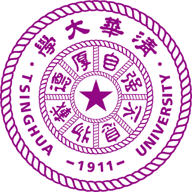
清华大学深圳国际研究生院 · 数据科学与信息技术 · 工学硕士
推免入学。研究方向是人工智能与计算机视觉：工业视觉检测、光学测量，以及 AI 在短跑训练中的应用。
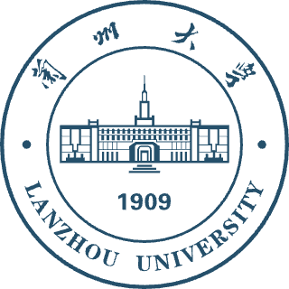
兰州大学萃英学院 · 数学与应用数学 · 荣誉理学学士
入选教育部基础学科拔尖学生培养计划 2.0。修读 90 余门、200 余学分课程，60 余门 90 分以上。

| 课程 | 分数 | 排名 |
|---|---|---|
| 基础数学 | ||
| 数学分析 | 92 | |
| 高等代数 | 94 | 1 / 160 |
| 抽象代数 | 97 | |
| 交换代数引论 | 97 | |
| 实变函数 | 94 | 3 / 157 |
| 微分几何 | 95 | |
| 基础拓扑学 | 90 | |
| 应用数学 | ||
| 数值分析 | 99 | 1 / 155 |
| 运筹学 | 98 | |
| 数学建模 | 97 | 1 / 142 |
| 组合数学 | 95 | |
| 计算神经学 | 94 | |
| 金融数学 | 90 | |
| 概率统计 | ||
| 随机过程 | 100 | 1 / 70 |
| 多元统计分析 | 95 | |
| 统计推断 | 94 | |
| 概率论基础 | 88 | |
| 计算机 | ||
| GPU 超算算法与并行技术 | 98 | |
| Linux 与 Python | 94 | |
| 计算机基础与 C 语言 | 91 | |
我做的东西，多半是先给自己用的：训练系统是因为没有教练，自媒体系统是因为一个人做账号忙不过来，那几个开发工具是让 AI 写代码时踩坑踩出来的。带 GitHub 链接的可以直接看代码，没开源的见面可以打开演示。
多角色的 Web 应用，从数据库、接口一直做到界面。
让模型的输出能被程序直接用：按固定格式输出，出错自动重试，关键结果再用规则复核一遍。
几个 AI 编程助手同时改一个仓库，质量靠自动检查把关。配套的几个工具已经开源。
工业缺陷检测和光学测量，发了 3 篇论文。
面向教练和运动员，覆盖计划、人员、训练执行、记录反馈和复盘。


截图来自 Cadenvo 的验收画廊，使用演示数据。
学生拍一道题上传，系统分六步分析。完整分析要等一阵，所以每一步算完就先推给学生看；最后画出知识点图谱、给出诊断，再出几道变式题。网页和微信小程序都做了。
给核电设备做的管板孔检测软件。从导入图纸、按区域逐个检测、实时看数据、判定缺陷，到最后出报告，都在一个软件里完成。
AI 改代码时常常找错文件、漏掉受影响的测试。所以先给它一张代码地图：这个函数在哪，谁在调用，改了要跑哪些测试。
同样的错误，AI 会一犯再犯，在提示词里多叮嘱一句没什么用。所以同一个坑踩到第二次，就把它升级：写进文档，变成自动检查，最后从类型上杜绝。
不是每件事都值得用最贵的模型。按通过率、速度和花费给模型打分：简单的活交给又快又便宜的，关键评审才用最强的。
项目一多，同一条规则会在几个仓库里各写一份，时间长了就对不上。所以把 AI 协作规则和检查脚本集中到一处，各项目引用同一份。
我自己的账号就在用。选题、写稿、拍摄、剪辑、发布和复盘放在一个系统里；原始素材只留在本机，不传云端。
素材一多，找镜头比剪辑还费时间。它先看画面、听台词，再对照脚本挑出合适的片段，最后导出给剪辑软件。
工厂换了产线，检测模型往往就不准了。我研究两件事：迁移之前先挑出真正有用的训练样本；现场采集出问题时，判断模型这次该不该更新。也参与了 Style Adaptation Module 的工作。
改前端时，最难的是说清楚哪里不对。把真实页面、设计稿和参考图摆在一起，问题一眼就能看出来；再让 AI 出几版方案，人来挑。
3 papers19 citationsh-index 2Google Scholar, 2026-10
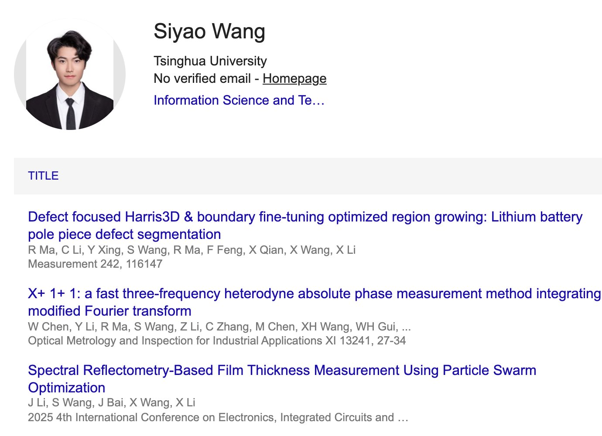
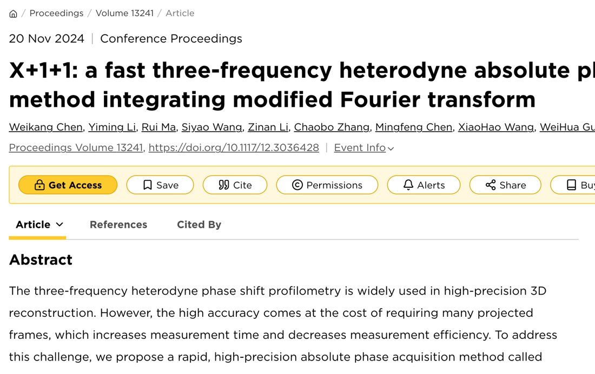
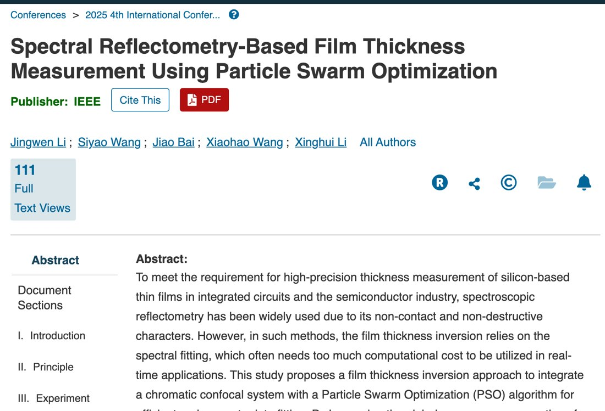
锂电池极片缺陷分割：以缺陷为中心的 Harris3D 关键点加边界微调的区域生长 [1]。在研：迁移学习前的源域样本筛选（风格空间聚类与距离度量），以及采集失败时检测器的安全更新（按图像和语义证据决定保留或跳过更新）。
X+1+1 三频外差绝对相位测量，融合改进傅里叶变换，减少条纹投影所需图像 [2]；基于光谱反射率的薄膜厚度测量，用粒子群优化反演膜厚（图 1）[3]。
自研 MathArc 研究 Erdős–Szekeres 开放情形 ES(7)=33：分类 393,988 个宽度六素蕴含式并给出 RUP/LRAT 证书，精确枚举 1,221,504 个八元状态和 108,068,130 个九元模型。均为可重放的局部结果，原问题未解决。
自行车手最优功率分配：双曲线功率曲线刻画车手类型，动力学 ODE 加弯道约束，以完赛时间最短求解，在东京奥运计时赛赛道上模拟（美赛 M 奖）。iGEM 益生菌治疗结直肠癌项目负责数学建模（金奖）。
研究从工业检测出发：锂电池极片缺陷分割、三频外差相位测量、基于光谱反射的薄膜厚度测量。之后转向 AI 辅助数学研究，用自研的 MathArc 系统研究 Erdős–Szekeres 问题的开放情形 ES(7)=33，得到一批带可重放证书的局部结构结果，手稿已整理成 arXiv 格式，原问题仍未解决。本科阶段的数学建模项目涉及自行车功率分配、FAST 反射面优化和传染病动力学。


我不是体育特长生，大一才第一次正经跑 100 米，12.08。七年后是 11.04，快了 1.04 秒。这一秒多是怎么来的，只有我自己的训练记录说得清，这也是后来想做训练系统的原因。
FOUNDER STORY
「认真练的话，
我能跑多快？」
这个问题我想了七年，Cadenvo 也是从这里开始的。
12.082019
大一新生运动会，我之前没练过短跑，跑了 12.08，拿了第一。高兴了一晚上，第二天开始想另一件事：要是认真练，我能跑多快？
这个问题后来跟了我七年。本科四年在兰大没人带，我自己摸索着练，把成绩跑到了 11.24。
40min2023 · 每堂课的记录
到了清华深圳，身边没有教练。今天练什么，昨天累了要不要减量，什么时候冬训，什么时候准备比赛，全得自己定。我一边读训练学的书和论文，一边把每堂课记下来，一次要记四十多分钟。
记了一年，我发现难的不是记，是用。三个月前的加速跑和今天比差多少，深蹲涨了，起跑有没有变快，答案明明都在记录里，我却拿不出来。
后来我在深研院把田径队组了起来，才知道队友和教练也一样：数据散在 Excel、聊天记录和教练的脑子里。
11.512025
4 月跑出 11.07。7 月训练测 80 米，红外电子计时 8.95，我以为破 11 就在眼前。
之后科研和创业越来越满，训练一次次被打断。赛季最后一场广东省大学生田径锦标赛，赛前又得了流感，决赛 11.51，第七名。
站在终点，我只觉得不甘心。离开跑道的理由我能找出很多：年纪、学业、公司。可我知道，如果现在停下，以后一定会后悔。
11.04现在
我又回去练了。后来跑出 11.04，在第 69 届马约翰杯拿了 100 米、200 米和两个接力的冠军。11 秒还没破，我还在练。
天赋不公平。博尔特的上限，和大多数人不在一个世界。可对认真训练的人来说，想知道的是自己到底能走到哪，能不能当世界冠军倒在其次。
专业队的运动员身边有教练天天看着，帮他记，帮他想，替他改下一周的计划。更多人只能像当年的我一样，自己查资料，自己填表格。
我想把教练做的这件事做成一个系统：记下每一次训练，看懂它，再决定下一次怎么练。让每个认真训练的人，都有机会知道自己能跑多快。


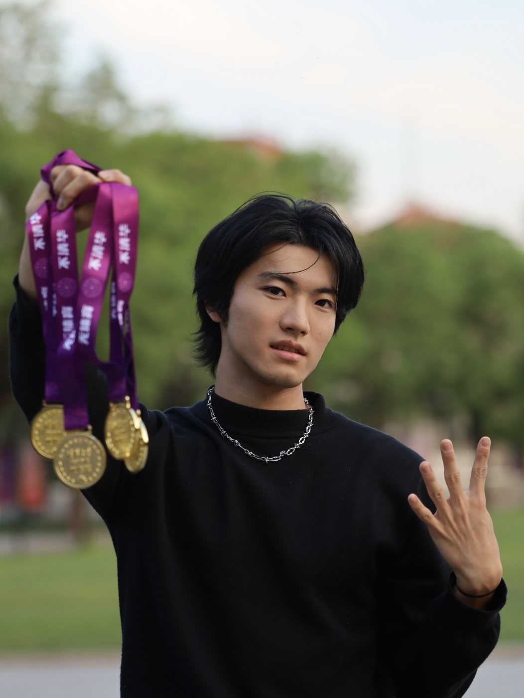


| 年份 | 比赛 | 项目 | 名次 |
|---|---|---|---|
| 2026 | 清华大学第 69 届马约翰杯 | 100 米、200 米、4×100 米、4×400 米 | 🥇 四冠王 |
| 2025 | 首都高校第 16 届秋季田径运动会 | 混合甲组 4×400 米（3:54.02） | 🥇 冠军 |
| 2025 | 清华大学第 68 届马约翰杯 | 100 米（11.07）、200 米 | 🥈 亚军 |
| 2024 | 首都高校第 15 届秋季田径运动会 | 男子甲组 4×100 米（43.62） | 🥈 亚军 |
| 2024 | 首都高校第 15 届秋季田径运动会 | 男子甲组 110 米栏（18.81） | 🥉 季军 |
| 2024 | 清华大学第 67 届马约翰杯 | 4×400 米 | 🥇 冠军 |
| 2024 | 清华大学第 67 届马约翰杯 | 100 米、200 米、4×100 米 | 🥈 亚军 |
| 2023 | 甘肃省第五届大学生运动会 | 男子甲组 100 米（11.41）、200 米（23.01） | 🥈 亚军 |
| 2023 | 兰州大学学生运动会 | 100 米、200 米 | 🥇 冠军 |
| 2021 | 兰州大学学生运动会 | 100 米（11.80） | 🥈 亚军 |
| 2021 | 兰州大学学生运动会 | 200 米（24.28） | 🥉 季军 |
| 2019 | 兰州大学新生运动会 | 100 米（12.08） | 🥇 冠军 |
清华大学深圳国际研究生院
体育代表队总队长
田径队队长兼教练
2024.09 至今
清华大学田径二队队员 · 2024–2025 年度清华大学体育代表队「十佳」学生运动员
账号的主角就是我自己：一个业余短跑运动员，在清华读书、训练、创业。播放最高的反而是 AI 科普：2025 年春节 DeepSeek 刚火的时候，我录了怎么用、怎么本地部署，最高一条 377.5 万。选题、写稿、拍摄、出镜、剪辑都是我一个人。
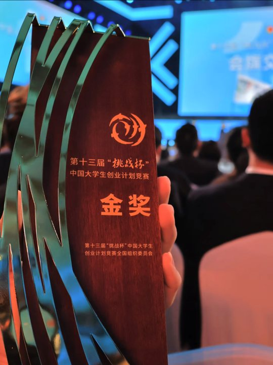
▶158.11万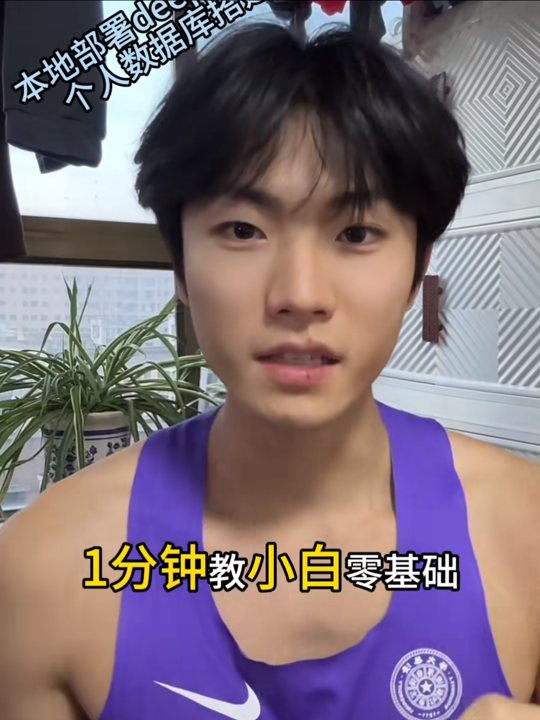
▶11.37万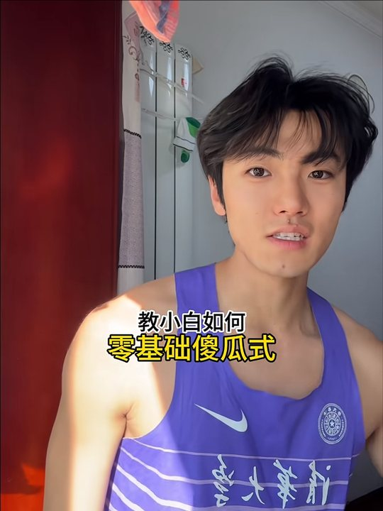
▶6.71万数据来自抖音创作者后台，2026 年 10 月。


FM 102.5
北京广播电视台 · 北京体育广播 · 2025 年 12 月 · 上、中、下三集
| 集数 | 首播 | 重播 |
|---|---|---|
| 上集 · 12 月 19 日 | 8:30–9:00 | 18:30–19:00 |
| 中集 · 12 月 20 日 | 8:30–9:00 | 18:30–19:00 |
| 下集 · 12 月 21 日 | 8:30–9:00 | 18:30–19:00 |
收听：FM102.5，或在「听听 FM」App 搜索《界内界外》
按年份排，点下面的类别可以筛选。
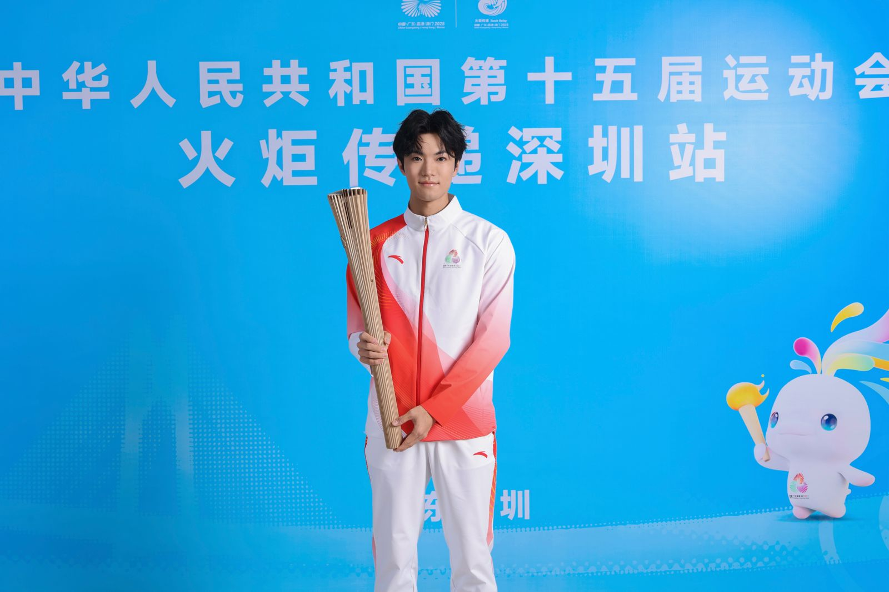

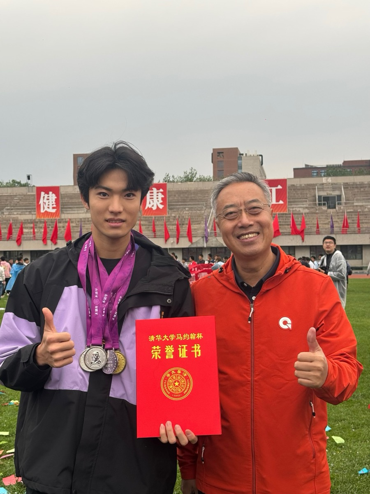
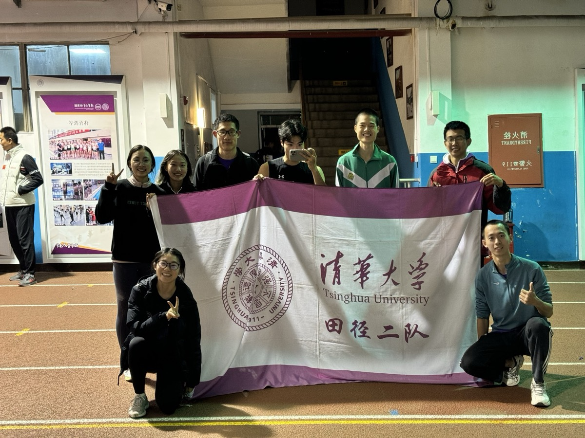

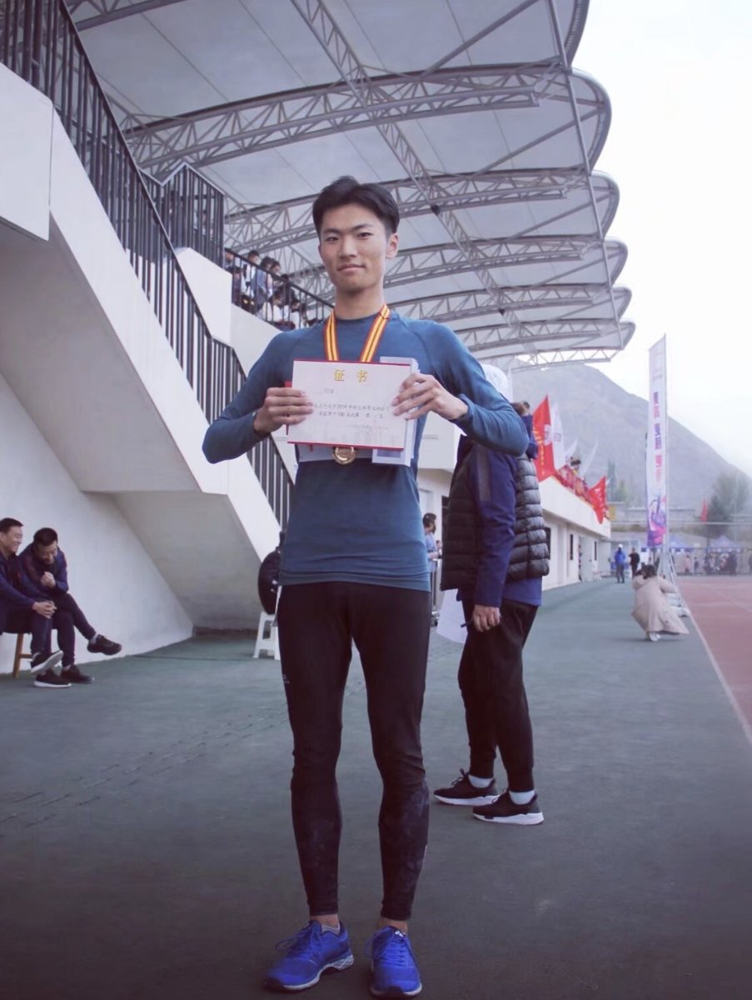
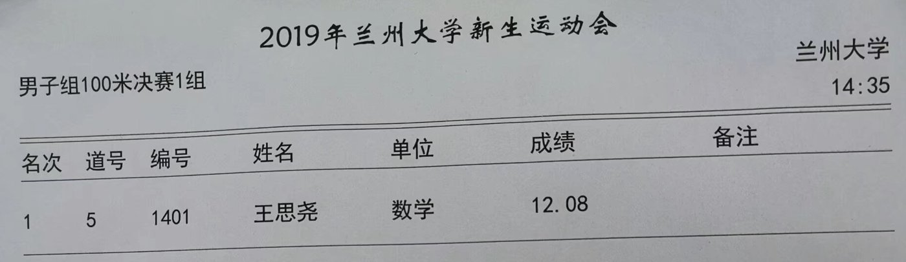